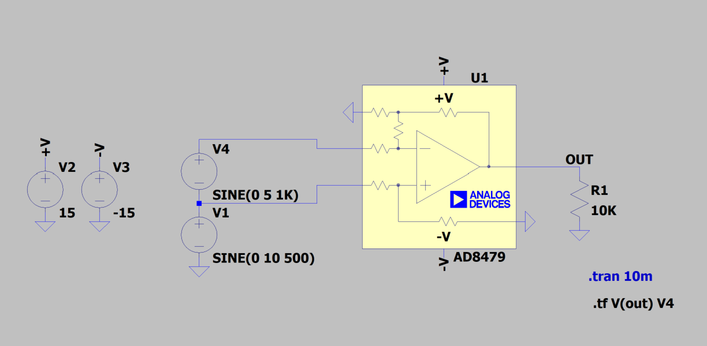
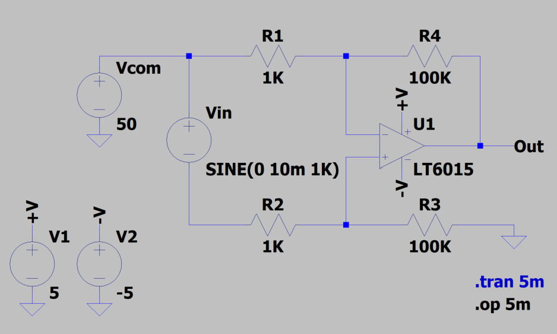

LTSpice study Note
Introduction of LTSpice
使用LTSpice的仿真过程可由下图表示：
flowchart LR
绘制电路 --> 转换成SPICE图表/模型 --> 仿真器进行仿真 --> 显示结果
交互求解（仿真器进行仿真）：先假设电路节点电压 -> 根据电路阻抗计算电流 -> 用电流反推节点电压 -> 如此反复直到收敛到容差范围内 ($Reltol, Vntol, Abtol,$ etc)。
SPICE模型具有以下特征：
- SPICE模型并非基于三极管或MOS管的模型，所以与真实芯片是不同的。
- SPICE模型是 行为级 的模型，根据真实芯片的各项指标进行建模。
- 仿真结果的准确度取决于仿真模型是否与真实芯片完全一致。
哪些放大器参数会在SPICE模型中进行建模呢？
| 应该建模的参数 | 可能建模的参数 | 没有建模的参数 |
| 开环增益 | 电源抑制比 vs. 频率 | 温度drift相关参数 |
| 增益带宽积 | 共模抑制比 vs. 频率 | 器件与器件的差异 |
| 静态电流 | 关断功能 | 失真 |
| 失调电压 | 过载恢复 | 最差情况误差 |
| 偏置电流 | 1/f噪声 | 相位翻转 |
| 失调电流 | 电流噪声 | 过驱性能 |
| 宽带电压噪声 | 负载电流 | 其他没有出现在芯片资料中的指标 |
| 压摆率 |
LTSPICE的常用快捷键：1
2
3
4
5
6
7
8
9
10
11
12
13
14
15
16
17
18
19
20
21
22R - Resistor
C - Capacitor
L - Inductor
D - Diode
G - Ground
V - Voltage
S - Spice Directive
T - Text
F2 - Component
F3 - Draw wire
F4 - Label Net/Name Net
F5 - cut/delete
F6 - copy/duplicate
F7 - move (unselected wires remain)
F8 - drag (connected wires adjust)
ESC - exit current mode
F9 | F9 or CMD + Z - Undo
Ctrl + R | CMD + R - Rotate
Ctrl + E | CMD + E - Mirror
Ctrl + Z | No Equivalent - Zoom area/zoom in
Ctrl + B | No Equivalent - Zoom out
SPACE zoom to fit / fit to view / auto focus
Functions of LTSpice
瞬态分析（.tran）
在RUN后，通过移动并在原理图中点击鼠标(探头)在示波器中增加新的信号。
ctrl+L可打开log菜单，查看一些控制台输出。一个常见的指令：
1 | .options plotwinsize=0 numdgt=15 |
可以增加示波器中的采样点数（而不被压缩）。
按住alt点击器件可测量其瞬态功率（电压电流的瞬时积）。按住ctrl可以移动图。
交流分析（.ac）
不同于瞬态分析(时域分析)，交流分析是基于频域的分析工具。
操作顺序：
- 编辑
.trans工具，配置AC Analyse中的参数。 - 编辑Source，提供一个
Samll Signal AC Analyse的小信号，一般给 1V。 RUN, 用探头点击输出侧。
如何使用交流分析 分析差分信号的频域特性：
- 在空白的示波窗口中右键选中
Add Traces。 - 先选中
V(out+)，将其改为V(out+, out-)，即可实现。
若想比较差分输出与输入的关系，可在上面的基础上，加/后单击输入信号：V(out+, out-)/I(1)。
直流参数扫描（.dc）
功能介绍：
- 变化信号源的直流值，进行支流分析。
- 用于仿真放大器的输入输出关系图，或是三极管的特性曲线。
编辑.dc对应参数即可，可以同时测试三个源。
噪声分析（.noise）
在频域进行的噪声分析，横轴是频率，纵轴是噪声密度。快捷键ctrl+V(out)(点击示波器上方的lable)显示均方根噪声。
传递函数计算（.tf）
- 计算小信号直流传递函数
传递函数的一个指令实例：1
.tf V(out) V3
其中，V(out)对应输出，V3对应信号源。则可仿真出对应的等效传递函数。
按照以下图例运行：

可得输出log为：1
2
3
4
5
6 --- Transfer Function ---
Transfer_function: -0.99998 transfer
v4#Input_impedance: 1.06031e+06 impedance
output_impedance_at_V(out): 0.00259024 impedance
当然，此处的传递函数主要意为：放大电路的放大比。
直流工作点计算（.op）
.op可以单独操作，但一般不这样用。- 在
.tran/.ac/.dc/.noice分析中，一般采用Newton-Raphson（潮流计算所使用的牛润迭代法）来计算直流工作点，失败后采用其他方法计算。
直流工作点的主要意义在于确定其他分析方法的初始值与工作点。
按照以下图例测试：

运算结果：
1
2
3
4
5
6
7
8
9
10
11
12
13
14
15
16
17
18
19
20
21
22
--- Operating Point ---
V(+v): 5 voltage
V(-v): -5 voltage
V(n001): 50 voltage
V(n002): 49.491 voltage
V(n003): 49.491 voltage
V(n004): 50 voltage
V(out): 0.00319077 voltage
I(R1): -0.000508961 device_current
I(R2): -0.000508982 device_current
I(R3): -0.00049491 device_current
I(R4): -0.000494879 device_current
I(V1): -3.19565e-05 device_current
I(V2): 0.00055499 device_current
I(Vcom): -0.00101794 device_current
I(Vin): 0.000508982 device_current
Ix(u1:1): 1.40719e-05 subckt_current
Ix(u1:2): 1.40829e-05 subckt_current
Ix(u1:3): 3.19565e-05 subckt_current
Ix(u1:4): -0.00055499 subckt_current
Ix(u1:5): 0.000494879 subckt_current
1 | --- Operating Point --- |
Non-Convergence
仿真原理：交互求解。先假设电路节点电压→根据电路阻抗计算电流→用电流反推节点电压→如此反复直到所有的节点电压稳定到软件设定的特定容差范围内($Reltol, Vntol, Abtol,$ etc)。
两种仿真不收敛的原因：
- 如果节点电压不能稳定下来，直流工作点分析会报错，
"No convergence inDCanalysis"/“Singular Matrix"/“Gmin/Source Stepping Failed”.这时AC分析或瞬态分析都会停下来，因为这两种分析的前提是能找到电路的稳定的直流工作点。 - 瞬态分析时，上述的交互求解过程在每个时间步进(timestep)都需要稳定下来如果某个timestep没有稳定，软件会减少timestep重新求解，因为减少timestep导致整体分析时间超时，这时软件会报错
“Time step too small”,仿真停止。
通用解决方法：
- 仔细检查电路:并非所有的收敛问题都是仿真软件的问题，仔细检查电路连接，或将电路分成几个部分，查找是否是某一部分电路的问题。
- 将Gmin从
1e-12改大，但不要超过1e-8。 - 采用Gear Integration方法(同时可以减小Reltol)。
- 将Abstol改大，但不要超过“
1u”。 - 使用UIC(如果是因为无法求解DC工作点，那么省略求解DC工作点，使用用户自己定义的初始条件.IC)，慎用，初始条件设置不好，仍然会不收敛。
- 将Reltol(相对误差容差)改大，这样仿真速度会提高。
- 在每个节点增加寄生电容cshunt，添加指令:“
.options cshunt=1e-15”。
或者在Control Panel中的SPICE里，恢复缺省值后，逐项尝试：
| After reset to default | Set Value |
| Gmin | 1e-10 |
| Integration Method | Gear |
| Gmin, Abstol | 1e-10, 1e-10 |
| Reltol | 0.005 |
| Solver | Alternate |
| add command | .options cshunt=1e-15 |
| Gmin, Abstol, Reltol | 1e-10, 1e-10, 0.003 |
导入外部模型
（注意存放路径为英文路径）在下载文件中用LTSpice打开.lib文件，右键选中器件名称点击create symbol即可。右键端口名可修改。
注意需要保存到软件library对应的根目录下，下次才能直接从库里索引到导入的文件。若要修改对应的导入文件的拓扑，可以直接在对应.asy文件中修改，画出边框后拖拽原先的引脚到指定位置，再删除原先的边框即可。
若未成功载入模型，可先使用指令.lib再在其中搜索载入对应模型的对应路径即可。
Reference
导航到bilibili链接： LTspice官方教程 | 运放电路仿真实战系列。